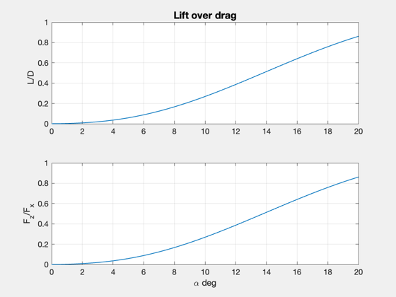

Compute the L/D ratio for flat surfaces in hypersonic flow.
Utilizes NewtonianAerodynamicsFromCAD to plot the L/D ratio for varying alpha. Animates the vehicle and shades the panels of the vehicle red that are contributing to the lift and drag. ------------------------------------------------------------------------ See also: NewtonianAerodynamicsFromCAD, LoadCAD ------------------------------------------------------------------------
Contents
%-------------------------------------------------------------------------- % Copyright (c) 2012,2014 Princeton Satellite Systems, Inc. % All Rights Reserved %--------------------------------------------------------------------------
X15 model
g = LoadCAD('x15.obj');
g.component = g.component([5 6 7 8 9]);
Define the flight condition
alpha = (0:.5:20)*pi/180; % angle of attack (rad) c = [0;0;0]; % center of mass (m) beta = zeros(1,length(alpha)); % sideslip (rad) p = StdAtm(20000); rho = p.density; % atmospheric density (kg/m^3) uMag = 1300*ones(1,length(alpha)); % airspeed (m/s) angle = zeros(7,length(alpha)); % surface angles uSurf = [0 1 -1 1 -1 0 0;... % axis of rotation for all surfaces 0 0 0 0 0 0.7071 -0.7071;... 0 0 0 0 0 0.7071 0.7071]; display = 1;
Call Newtonian aerodynamics model
[force, torque, cL, cD, lOverD, aTotal] = ...
NewtonianAerodynamicsFromCAD( alpha, beta, uMag, rho, g, c, angle, uSurf, display );

Rotate to body axes and plot results
f = zeros(size(force)); for k = 1:length(alpha) c = cos(alpha(k)); s = sin(alpha(k)); f(:,k) = [c 0 s;0 1 0;-s 0 c]*force(:,k); end Plot2D( alpha*180/pi, [lOverD; f(3,:)./f(1,:)],'\alpha deg', {'L/D', 'F_z/F_x'}, 'Lift over drag'); %-------------------------------------- % $Id: 6f59655796579f7e8178971952b785338587a981 $